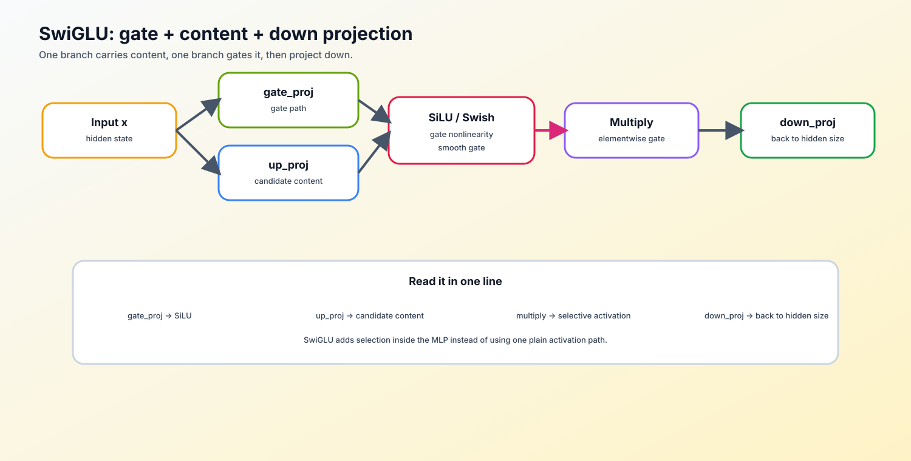

前置阅读
导语： 先能读出逐元素激活、矩阵投影和归一化的位置，再比较 MLP 的单路激活与 SwiGLU 的双路门控。
Step 1: 核心思想与痛点
从 Activation 到 Sigmoid 再到 Swish，门控机制的每一步演化都在回答同一个问题：怎么让信息流动得更好。
什么是 GLU (Gated Linear Unit)？
传统MLP是 Wdown(Activation(Wupx))。其中 Wup∈Rd×h 是升维投影矩阵（将输入从 d 维映射到隐藏层 h 维），Wdown∈Rh×d 是降维投影矩阵（将隐藏层映射回 d 维）。
门控机制GLU引入了“两条路”：一条路做激活（作为门控开关），另一条路保持线性，然后两者逐元素相乘（Hadamard Product）。
公式：GLU(x,W1,W2,W3)=(xW1⊙Sigmoid(xW2))W3。
其中 W1,W2∈Rd×h 是两个升维投影矩阵（d 为输入维度，h为隐藏层维度），W3∈Rh×d 是输出投影矩阵。xW1 走线性路，xW2 经过激活函数走门控路，两者逐元素相乘后再由 W3 投影回 d 维。
这种机制类似于 LSTM 中的遗忘门，极大地增强了模型捕捉复杂模式的能力。
什么是 SwiGLU？
把 GLU 中的激活函数换成了 Swish，即 $ Swish(x) = x \cdot \text{Sigmoid}(\beta x)，在 PyTorch 中 $\beta=1 时等于 SiLU）。$ SwiGLU(x) = (xW_1 \odot Swish(xW_2))W_3$。
标准 MLP 的 Activation 对所有神经元一视同仁；GLU 用 Sigmoid 作为"门"，让网络学会按需保留或阻断信息；SwiGLU 用 Swish 替换 Sigmoid，在负值区保留了一定梯度，既保留了门控的选择能力，又避免了梯度在门控单元接近 0 时完全截断——信息流动更顺畅，训练也更稳定。
Step 2: 核心数学机制：参数量对齐
公式看懂了，但 LLaMA 为什么要把隐藏层设为38d？这一节不让你背数字，而是带你走一遍参数量推导——门控结构多了个矩阵，维度自然要跟着调，才能和标准 Transformer 对齐。
典型的面试问题：
“在 GPT-2 中，隐藏层维度通常是输入维度 d 的 4 倍（即 4d）。但在使用 SwiGLU 的 LLaMA 中，为什么隐藏层维度变成了 38d 并向上取整？”
推导过程：
-
标准 MLP 参数量：
输入为 d，隐藏层为 h。
有两个投影矩阵（升维 d→h，降维 h→d）。
总参数量 = 2⋅(d×h)。
当 h=4d 时，总参数量 = 2⋅4d2=8d2。
-
SwiGLU MLP 参数量：
输入为 d，隐藏层为 h。
因为有门控机制，升维阶段需要两个投影矩阵（Wgate 和 Wup，均是 d→h）。
降维阶段需要一个矩阵（Wdown，是 h→d）。
总参数量 = d×h+d×h+h×d=3⋅(d×h)。
-
对齐参数量：
为了使得 SwiGLU 的计算开销（参数量）与原始模型完全相同：
3⋅d⋅h=8d2
解得：h=38d
这正是 LLaMA 源码中对中间层维度进行 int(8 * hidden_size / 3)计算，并进一步对齐到特定倍数（如 256）的根本原因。
图解：SwiGLU 的 gate / up / down 三条线
SwiGLU 可以理解成“先升维成两条分支，一条产生内容，一条产生门控，再降回 hidden size”。
x [B, T, D]
│
├─ gate_proj ─► gate [B, T, I] ─► silu(gate) ┐
│ ├─ elementwise multiply ─► down_proj ─► [B, T, D]
└─ up_proj ─► up [B, T, I] ──────────────┘

和普通 FFN 对比：
| 结构 |
中间路径 |
直觉 |
| FFN |
up -> activation -> down |
所有维度统一经过非线性 |
| SwiGLU |
gate/up -> multiply -> down |
gate 决定哪些信息通过 |
因此 LLaMA MLP 常见三个投影：gate_proj / up_proj / down_proj。后面做 LoRA 时，如果 target modules 扩到 MLP，通常就是这三处。
Step 3: 工业级实现框架与性能陷阱 (Memory Bound)
公式和维度都对齐了，接下来进入真实的训练框架。SwiGLU 的实现远比写三行 Linear 复杂——融合矩阵、并行计算、内存带宽，每一步都藏着工程取舍。
在理解了 SwiGLU 的基本公式（down_proj(SiLU(gate_proj(x)) * up_proj(x))）和 8/3 维度由来后，如何把它写进真实的训练框架中？
性能陷阱 1：张量并行 (TP) 与内存对齐
在真实的 LLaMA 源码中，除了按 8/3 计算出隐藏层维度，还需要将其向上取整对齐到一个 multiple_of（通常是 256）的倍数。
这不仅是为了让单卡 Tensor Core（通常要求 8-byte 或 32-byte 对齐）跑得更快，更是因为大模型训练会使用张量并行 (Tensor Parallelism)。如果隐藏层维度不能被 GPU 数量整除（例如 TP=8 时，对齐到 256 的倍数后分给 8 张卡，每张卡至少能分到 32 维），张量并行切分权重矩阵时会导致分片不完整或运行时崩溃。
性能陷阱 2：访存瓶颈 (Memory Bound) 与矩阵融合
在最朴素的代码实现中，开发者会分别定义并执行 gate_proj(x) 和 up_proj(x)。
由于这两个线性层共享完全相同的输入张量 x，分开计算会导致巨大的输入 x 被 GPU 从全局显存 (HBM) 中读取两次。
工业界解法 (Matrix Fusion)：
在 vLLM、Megatron 等主流框架中，标准的做法是将 Wgate 和 Wup 这两个形状为 [d,h] 的权重矩阵，在初始化时沿列方向（dim=-1）拼接成一个巨大的融合矩阵 gate_up_proj，其形状为 [d,2×h]。
在前向传播时，输入 x 只需要被读取一次，进行一次矩阵乘法。得到的结果再通过 torch.chunk(2, dim=-1) 切分为两半，分别作为 gate 和 up 块。这极大地缓解了内存带宽瓶颈。
Step 4: 动手实战
这里开始把参数量推导和门控逻辑落实到最小可运行代码里，重点看每个张量是怎么流动的。
要求：请补全下方 calculate_intermediate_size 和 SwiGLU 模块的代码。